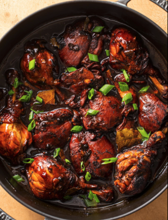

Chicken Adobo Recipe

A Filipino Main Dish
Chicken Adobo is the Philippines’ ultimate comfort dish—simple, bold, and irresistibly savory. The magic of adobo lies in its perfect balance of salty, sour, and umami goodness, creating a glossy, aromatic sauce that practically begs to be spooned over a steaming bowl of rice. It’s the kind of home-cooked classic that tastes even better the next day (if it lasts that long!).
Fun fact: the word “adobo” comes from the Spanish term adobar, meaning “to marinate,” but Filipino adobo actually predates Spanish colonization—early Filipinos were already using vinegar and salt to preserve food in the tropical climate. Every family has their own secret twist, from adding coconut milk to tossing in potatoes or hard-boiled eggs, making Chicken Adobo one of the most personalized dishes in Filipino cuisine. No matter the version, one thing is certain: once you try it, you’ll understand why it’s often called the unofficial national dish of the Philippines.
Ingredients
- 2 lbs (900 g) Chicken - bone-in thighs and/or drumsticks
- 1/2 cup Soy Sauce
- 1/3 - 1/2 cup White Vinegar - Cane Vinegar is preferred
- 6 - 8 cloves Garlic, smashed
- 2 - 3 Bay Leaves
- 1 tsp Whole Black Peppercorns
- 1 cup Water or as needed
- 1 - 2 Tbsp Neutral Cooking Oil
- 1 tsp Brown Sugar, optional for slight sweetness
- Salt, to taste
- Steamed White Rice, for serving
- Optional Add-ins(Family-style Twists):
- 2 Hard-boiled eggs
- 1 - 2 Medium Potatoes, cubed and fried
- 1/4 cup Coconut Milk, for creamy adobo
Steps
- In a bowl, combine the chicken and soy sauce. Let it marinate for at least 20 minutes or up to overnight in the fridge if you are planning ahead like a wizard.
- Heat the oil in a large pan or pot over medium heat. Add the smashed garlic and cook for about 30 seconds until your kitchen smells amazing.
- Add the marinated chicken to the pan. Save the marinade for later. Lightly borwn the pieces on both sides for extra flavor-- think golden and not burnt.
- Pour in the reserved marinade, vinegar, water, bay leaves, and peppercorns. Please do not stir the mixture right after adding the vinegar and let it come to a gentle boil first to mellow the acidity.
- Once boiling, lower the heat, cover, and simmer for 25-30 minutes or until the chicken is tender and juicy. Give it an occasional, gentle turn.
- Add brown sugar if using, and adjust salt to taste. Want a richer sauce? Remove the lid and simmer a few more minutes to reduce and thicken.
- If using potatoes and/or hard-boiled eggs, add them during the last 5-10 minutes of simmering so they soak up that delicious sauce.
- Serve hot over a generous bed of steamed rice. Spoon plenty of that glossy adobo sauce on top-- no skimping allowed.
Fun Tip: Chicken Adobo tastes even better the next day, so leftovers are basically a reward for your future self.
Home